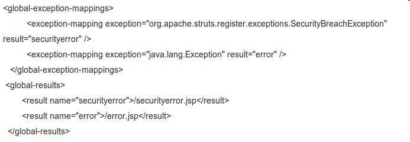

Struts2中global-exception-mappings的配置
Posted at 07/12/2010

在看struts-2.2.1的文档时，按照例子的步骤一步步地做下去，但是在做到Exception Handling这一节时（http://struts.apache.org/2.2.1/docs/exception-handling.html）要在struts.xml中配置以下信息：

但是当我把这段内容Ctrl+C再Ctrl+Z到Eclipse时package标签却报了错，错误如下：The content of element type "package" must match "(result-types?,interceptors?,default-interceptor-ref?,default-action-ref?,default-class-ref?,global-results?,global-exception-mappings?,action*)"。大概就是说package下只能放特定的几个标签，但是明明有global-exception-mappings，一时有些困惑……
于是Google搜索，在Struts以往的版本中也发现一个类似的例子，有些不一样的是global-results标签在global-exception-mappings的前面，于是就在本地试验了一下，把global-results标签与global-exception-mappings调换了一下顺序，错误消失了……
至于这个问题的原因，我思考了一下还是想不出个所以然，觉得完全没必要这样，global-exception-mappings在前面反而能更清晰地表达意思，或者就不要管顺序嘛，而struts为什么非要报这个错误呢？
近期文章
- JAVA WEB项目如何获得项目根路径？
- Struts2中global-exception-mappings的配置
- Java集合应用中的一个小问题
- Jetty中文乱码问题的解决
- JS中URLEncode格式化字符串
水月痴人-程序猿
夫君子之行，静以修身，俭以养德，非淡泊无以明志，非宁静无以致远。夫学须静也，才须学也，非学无以广才，非志无以成学。淫慢则不能励精，险躁则不能冶性。年与时驰，意与日去，遂成枯落，多不接世，悲守穷庐，将复何及！